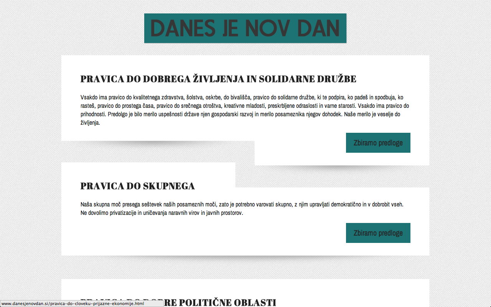
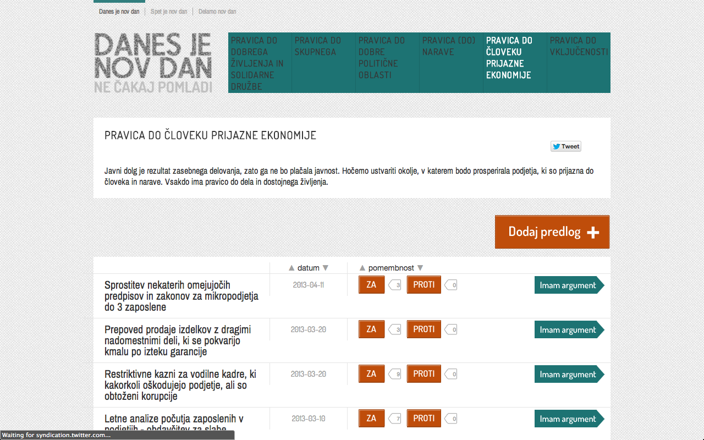
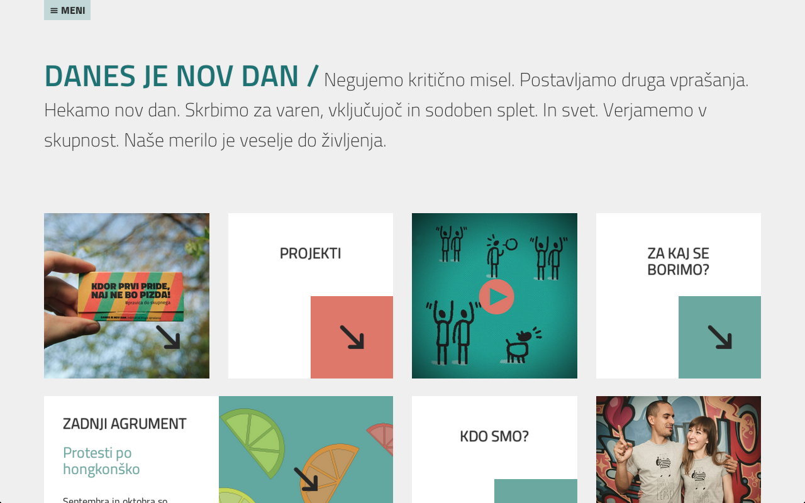
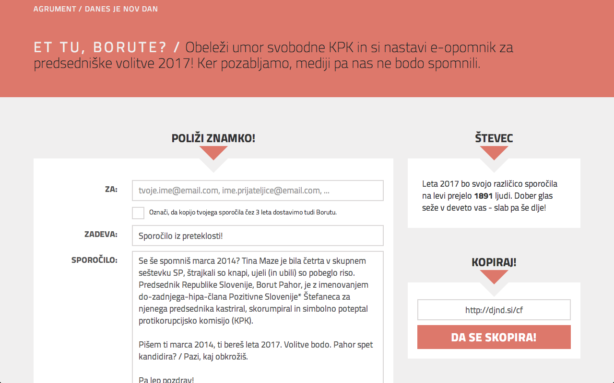
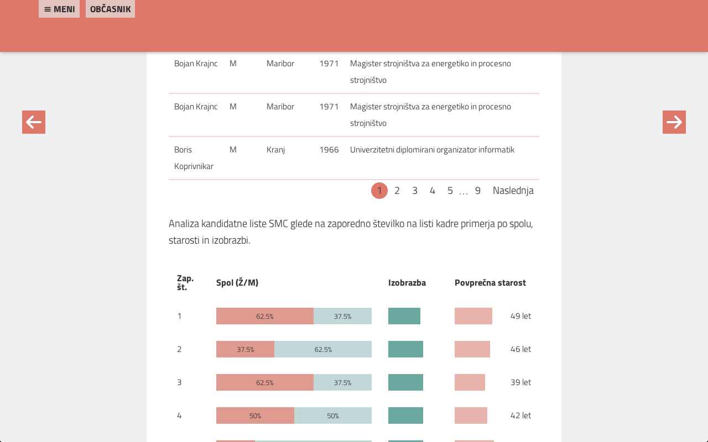
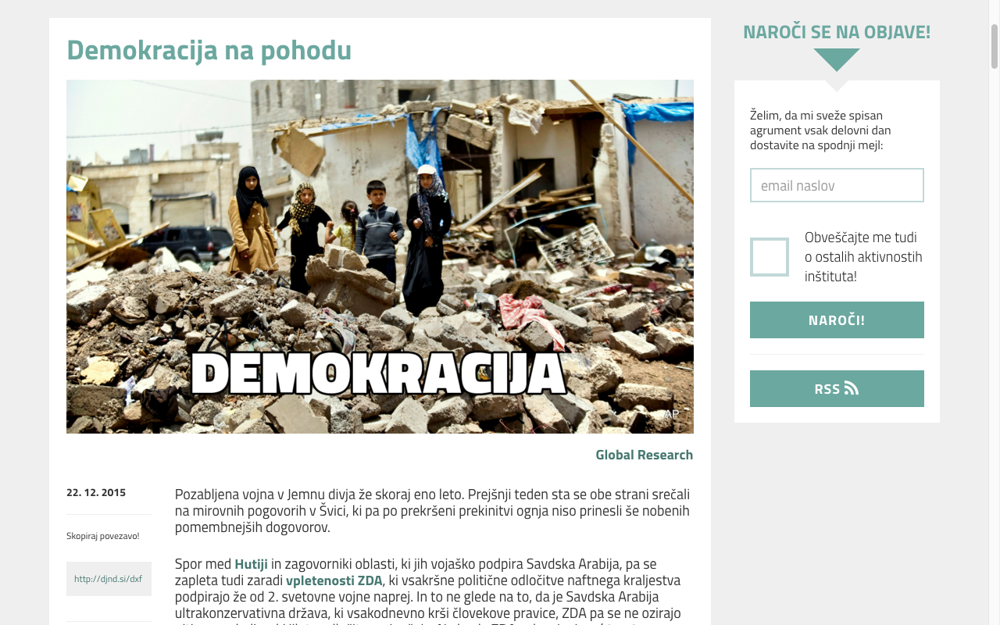
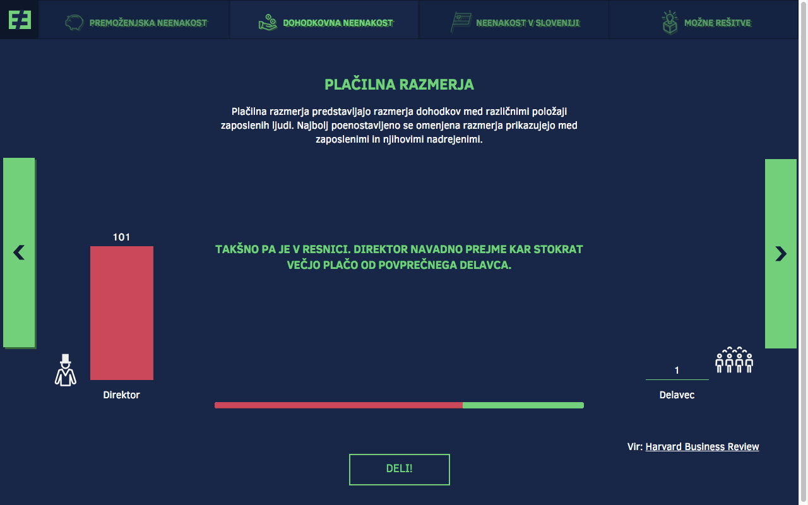
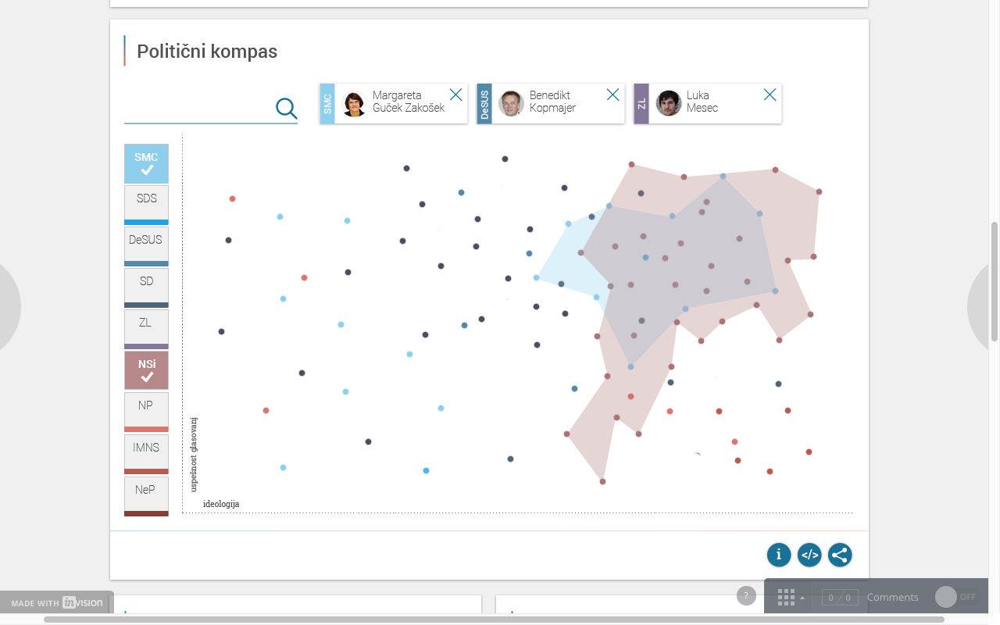

Dobro jutro!
Več nas bo, prej bomo na cilju!
Danes je nov dan
/
@danesjenovdan
danesjenovdan.si 0.1

danesjenovdan.si 0.2

Danes je nov dan, Inštitut za druga vprašanja

KONSENZ
pravica do dobrega življenja in solidarne družbe
pravica do skupnega
pravica do dobre politične oblasti
pravica (do) narave
pravica do človeku prijazne ekonomije
pravica do vključenosti
PROJEKTI
Et tu, Borute?

(S)laughter
Občasnik

Agrument

neenakost.je

Parlameter
